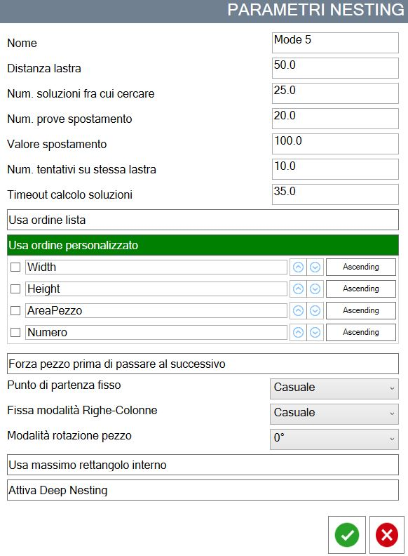
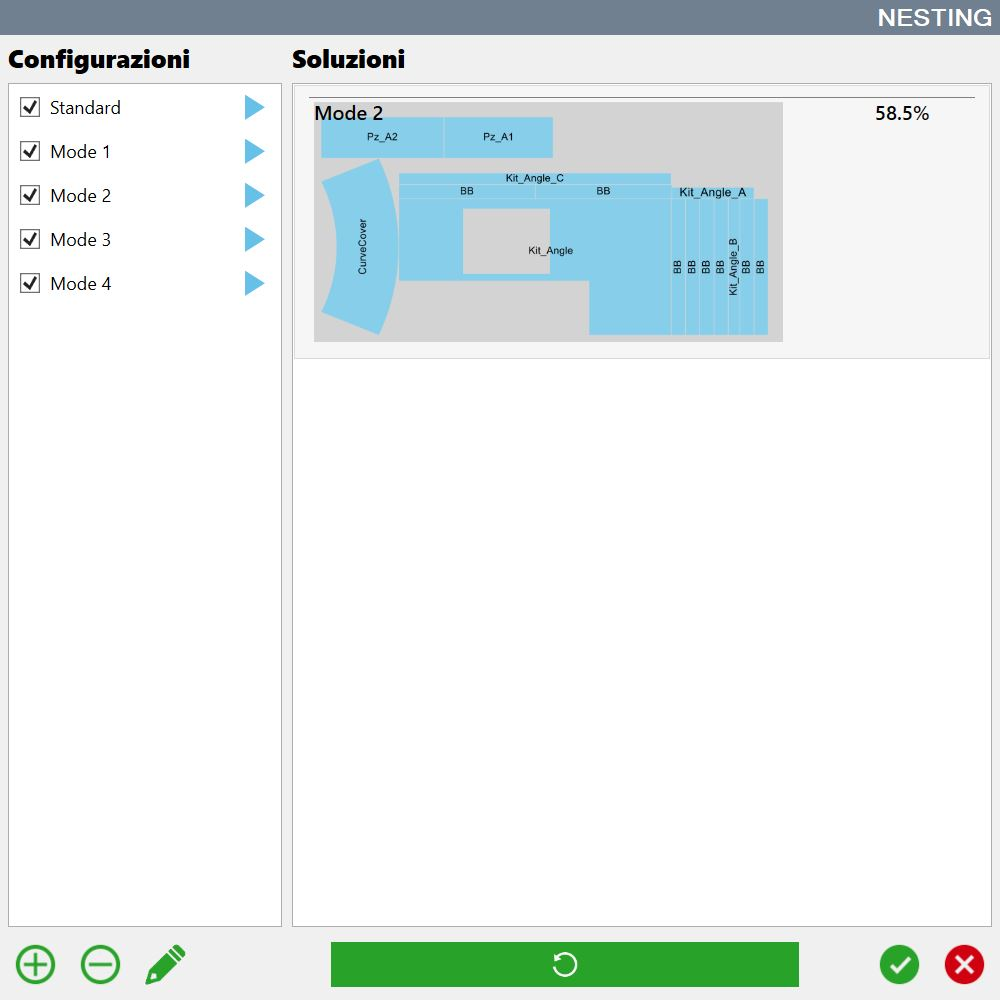

El uso del Nesting automático es especialmente útil cuando hay muchas piezas que procesar y las distintas combinaciones ya no pueden gestionarse fácilmente de forma manual.
En función de los parámetros configurados puede haber distintas soluciones. Estas se muestran en pantalla y el operador puede elegir la configuración preferida.
/0.00.png)
Botones
/0.04.png) | Añadir |
/0.05.png) | Eliminar |
/0.06.png) | Modificar |
/0.07.png) | Ejecución |
Modificar configuración
El Nesting automático permite personalizar los parámetros utilizados para calcular el posicionamiento de las piezas dentro del área de trabajo asociado a una configuración.
De hecho, según el tipo de piezas que se deban procesar, puede haber estrategias mejores y más eficientes.

Nombre | Nombre de la configuración que aparece en la lista. |
Distancia a la losa | Distancia que las piezas deben mantener respecto al borde de la losa cuando se posicionan. |
N.º de soluciones entre las que buscar | Número de soluciones calculadas por el Nesting. De todas las calculadas se selecciona la mejor. |
N.º de pruebas de desplazamiento | Número de pruebas realizadas desplazando la pieza si no cabe en el perímetro de la losa. |
Valor de desplazamiento | Valor que se utiliza para desplazar la pieza e intentar introducirla dentro del perímetro de la losa. |
N.º de intentos en la misma losa | Número de intentos para introducir la pieza dentro del mismo perímetro en caso de que no quepa. |
Timeout de cálculo de soluciones | Tiempo máximo permitido para calcular cada solución individualmente. |
Usar orden de la lista | Obliga a intentar posicionar las piezas dentro del perímetro siguiendo el orden en el que aparecen en la lista de piezas. |
Usar orden personalizado | Permite elegir el orden en el que se intentarán posicionar las piezas dentro del perímetro de la losa en función de algunas de sus propiedades. |
Forzar pieza antes de pasar a la siguiente | Permite elegir si se intenta posicionar la pieza en distintas ubicaciones dentro del perímetro de la losa o si se pasa a colocar la siguiente sin más intentos. |
Punto de inicio fijo | Permite elegir el punto del perímetro desde el que se empezarán a insertar las piezas. |
Fijar modo filas-columnas | Permite elegir si, durante la inserción de las piezas, debe mantenerse una lógica para disponerlas por filas, por columnas o de forma aleatoria. |
Modo de rotación de la pieza | Permite elegir la lógica con la que se pueden girar las piezas durante las pruebas de inserción dentro del perímetro de la losa. |
Usar rectángulo interior máximo | Si está habilitado, las piezas se insertarán dentro del rectángulo de mayor área contenido en el perímetro. |
Activar Deep Nesting | Si está deshabilitado, las piezas se insertan en la losa de forma que se optimice el uso del sistema de manipulación del material con ventosas para resolver las colisiones. |
Ejecución del Nesting
Al pulsar la flecha azul situada junto a cada elemento de la lista, se calculará el Nesting utilizando esa configuración.
En la sección de la derecha se mostrará una vista previa del resultado. Se muestra la disposición de las piezas dentro del perímetro y el porcentaje de área de la losa cubierto por las piezas.

Si la disposición de las piezas no resulta satisfactoria, puede pulsarse de nuevo la flecha azul para recalcular el resultado.
Después de ejecutar todas las configuraciones de Nesting, los resultados se ordenan mostrando primero los que permiten ocupar la mayor superficie de la losa.
/0.09.png)
Una vez elegida la configuración preferida, pulse el botón de confirmación y las piezas se posicionarán sobre la losa según la disposición elegida. El operador puede seguir modificando la posición de las piezas en el área de trabajo.
/0.10.png)